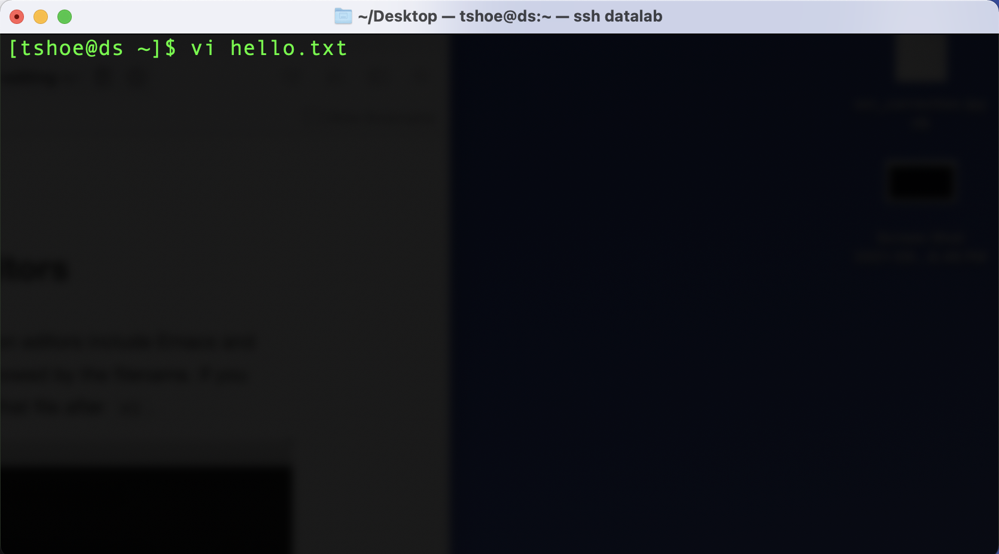
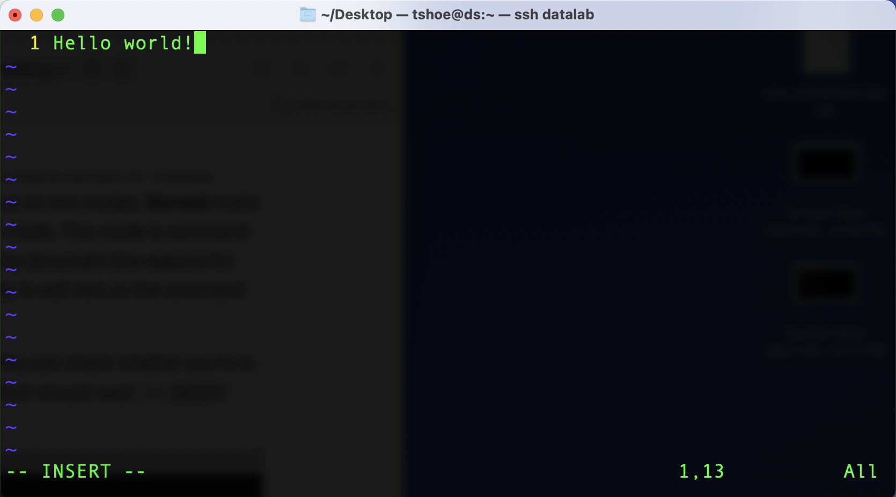
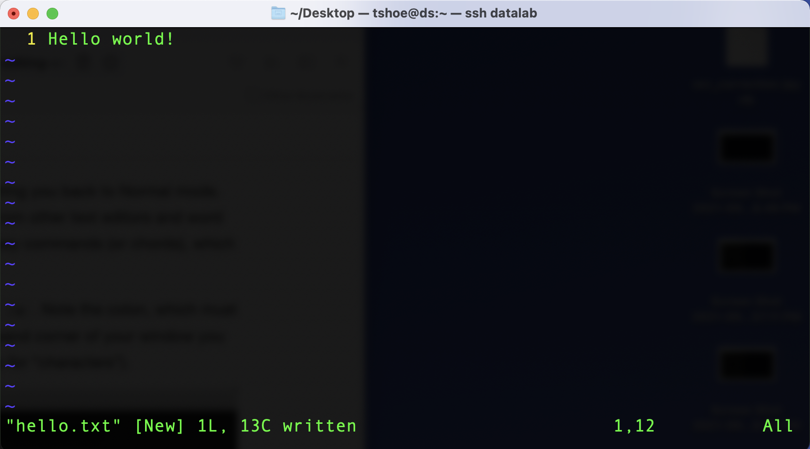

7 Editing Files
Beyond the basic commands and navigation functions we’ve discussed so far, the command line also features the ability to edit files directly, usually by means of a text editor. These editors are similar in nature to Microsoft Word or Mac Pages but they’re much more stripped down and tend to work best with plain text files. These editors are only accessible from the command line and it is important to know how to use them so that you can open, read, and write directly on the command line.
7.1 Plain Text vs. Binary Files
Before continuing on to these editors, we’ll briefly distinguish plain text from
binary data. This distinction bears directly on what we can and cannot edit
using a text editor. In computing, plain text has multiple fuzzy, interlocking
meanings, but generally it refers to some kind of data that is stored in a
human readable form, which is to say, it is comprised of a collection of text
characters (usually ASCII, but increasingly UTF-8). A common way to store this
data is with a .txt file, though code files (.py, .R) and tabular data
(.csv) also fall under the heading of plain text.
Binary data, on the other hand, is not human-readable. It is not stored in a way
that cleanly translates to various alphanumeric characters; rather, it stores
data as sequences of 0/1 bits without reference to characters. Often such
representations are used for data storage. Common file types for binary data
include ones for images (.jpg, .png), for sound (.mp3), and for various
executables (.exe).
We should note however that, at base, this distinction is somewhat false, in that all files are ultimately just binary data. The plain text/binary distinction is thus more a matter of how computers represent data: bits in plain text represent characters, while bits in binary files represent some kind of custom data format, which often requires special encoding/decoding protocols to use it.
We can see how all this works if we try to open a binary file with an application that doesn’t expect this kind of format. For example, if you open this image:

…with a text editor, you’ll see something like this:
<89>PNG^M
^Z
^@^@^@^MIHDR^@^@^F<86>^@^@^C<9e>^H^F^@^@^@.¡¢¹^@^@^LliCCPICC
Profile^@^@H<89><95>W^GXSÉ^V<9e>[RIh<81>P¤<84>Þ^DéUJ^H-<82><80>TÁFH^B
%Æ<84> bg]Tpí"<8a>^U]^UQt-<80>,*b/
<8b>bï<8b>^E<95><95>u± (*oB^Bºî+ß;ß7wþ{æÌ^?Ê<9d>¹÷^N^@Z½<©4^OÕ^F _R K<88>^Le<8d>MKg<91>:^@^Y0^@^S<98>^C?^^_.
eÇÇÇ^@(<83>ýßåÝ^M<80>(û«ÎJ®^?<8e>ÿWÑ^U^Hå|^@<90>ñ^Pg
[...]A complete mess! We’re seeing this because text editors aren’t able to interpret data streams from binary files. They’ll do their best to try and parse the stream, but that process won’t ultimately work. There is thus no way to edit this kind of file in a text editor – you’d simply have no idea where to start. And more, making any such changes would likely cause problems with the file data itself, since it contains custom encodings that don’t correspond to plain text characters. If we deleted a snippet of “text” from the output above, resaved it, and reopened it in an image viewer…
…we’ll see that it’s been corrupted.
7.2 Inspecting Files
If, while working on the command line, you need to get a sense of what kind of
data is stored in a file, the file function is useful. Here’s an image:
$ file broken_image.png
broken_image.png: PNG image data, 520 x 470, 8-bit/color RGBA, non-interlacedBased on this information, we can see that that won’t work for us. On the other hand, this information:
$ file README.md
01_overview.Rmd: ASCII text…shows us that README.md will. The ASCII text message lets us know we can
open it with a text editor. The same goes for a .csv:
$ file data.csv
data.csv: CSV textWe would be able to open this as well.
Finally, file can also tell us whether a file is in an archive format (like
.zip):
$ file archived_file.csv.zip
archived_file.csv.zip: Zip archive data, at least v2.0 to extractBefore opening this, we’d need to use the unzip command:
$ unzip archived_file.csv.zip
inflating: archived_file.csv.zip
$ ls
archived_file.csv archived_file.csv.zip
$ file archived_file.csv
archived_file.csv: CSV textThere are two other commands that are useful for inspecting files on the
command line. cat (“concatenate”) will print (or attempt to print) in plain text
the entirety of a file’s contents on screen:
$ cat file.txt
I'm written in plain text!$ cat prompt.png
?PNG
IHDR?.???
liCCPICC ProfileH??WXS??[RIh?P????U-??T?FH %Ƅ?bg]Tp?"?]Qt-?,*b/?b???u??(*oB??+?;?7w?{??ʝ??Z?<?4? _R K?
[...]On the other hand, head will print the first N lines on screen (its default
is 10 lines):
$ head moby_dick.txt
CHAPTER 1. Loomings.
Call me Ishmael. Some years ago—never mind how long precisely—having
little or no money in my purse, and nothing particular to interest me
on shore, I thought I would sail about a little and see the watery part
of the world. It is a way I have of driving off the spleen and
regulating the circulation. Whenever I find myself growing grim about
the mouth; whenever it is a damp, drizzly November in my soul; whenever
I find myself involuntarily pausing before coffin warehouses, and
bringing up the rear of every funeral I meet; and especially wheneverBoth commands offer you a method to get an easy glimpse at the contents of files on your computer.
Note: common word processing software like Microsoft Word poses an interesting complication to all of the above. Word docs are actually comprised of a number of different, associated files under the hood. It’s technically possible to alter the text of such files, but finding the location where you’d like to make your change can be a big pain, so it’s often just easier to use an application that has been made to interact with them. Welcome to the world of proprietary software!
7.3 Accessing Command Line Text Editors
Now that we know what we can and can’t edit on the command line, we can make a
file. To do so, we’ll use a text editor called Vim. Macs and Git Bash both
ship with this application, so there’s no need to download it (other command line
editors include Emacs and Nano). If you’d like to open a file with vim, type vi
in a command line window, followed by the filename. You can also create a new
file this way, simply by typing the name you’d like to use for that file
after vi.

Vim works a bit differently than other text editors and word processors. It has a number of ‘modes,’ which provide different forms of interaction with a file’s data. We will focus on two modes, Normal mode and Insert. When you open a file with Vim, the program starts in Normal mode. This mode is command-based and, somewhat strangely, it doesn’t let you insert text directly in the document (the reasons for this have to do with Vim’s underlying design philosophy: we’re more likely to edit text on the command line than we are to write it).
To insert text in your document, switch to Insert mode by pressing i. You can
check whether you’re in Insert mode by looking at the bottom left hand portion
of the window. You should see an -- INSERT -- string.

Once you are done inserting text, pressing ESC (the Escape key) will bring you
back to Normal mode. From here, you can save and quit your file, though these
actions differ from other text editors and word processors: saving and quitting
with Vim works through a sequence of key commands (or chords), which you enter
from Normal mode.
To save a file in Vim, make sure you are in Normal mode and then enter :w. Note
the colon, which must be included. After you’ve entered this key sequence, in the
bottom left hand corner of your window you should see “[file name] XL, XC written”
(L stands for “lines” and C stands for “characters”).

To quit Vim, enter :q. This should take you back to your command line and, if
you have created a new file, you will now see that file in your window.
If you don’t want to save the changes you’ve made in a file, you can toss them
out by typing :q! in place of :w and then :q. Also, in Vim key sequences
for save, quit, and hundreds of other commands can be chained together. For
example, instead of separately inputting :w and :q to save and quit a file,
you can use :wq, which will produce the same effect. There are dozens of base
commands like this in Vim, and the program can be customized far beyond what
you’ll typically need for basic command line usage. More information about this
text editor can be found here.
7.4 Basic Vim Commands
As before with the CLI commands, we’ll only cover a small portion of Vim commands in the workshop. The table below summarizes them, but a more complete list may be found on this cheat sheet.
| Command | Function |
|---|---|
| ESC | Enter Normal mode. |
| i | Enter Insert mdoe. |
| :w | Save. |
| :q | Quit. |
| :q! | Quit without saving. |
7.5 Cleaning Up
Assuming we did save our text file, let’s clean up our directory another way.
The last command we’ll discuss is rm (“remove”). You can use it to delete files
and from your computer:
$ ls
data.csv hello.txt moby_dick.txt project_folder
$ rm hello.txt
$ ls
data.csv moby_dick.txt project_folderUsing the -r flag (which stands for “recursive”), you can also delete folders:
$ rm -r project_folder
$ ls
data.csv moby_dick.txtPlease note that this command, like many such commands on the command line, has
no undo. It’s also a particularly mute command, giving little in the way of an
indication about what it’s doing. If you have multiple files to delete, or if
you’re worried that it might delete something you don’t want to remove, you may
consider putting rm in interactive mode with -i. This will prompt you with a
yes/no query for every file the command would remove, given the information you
supplied it with:
$ ls
data.csv moby_dick.txt
$ rm -i moby_dick.txt
remove moby_dick.txt? <- enter "no" and press Return/Enter
$ ls
data.csv moby_dick.txt